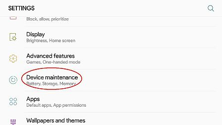
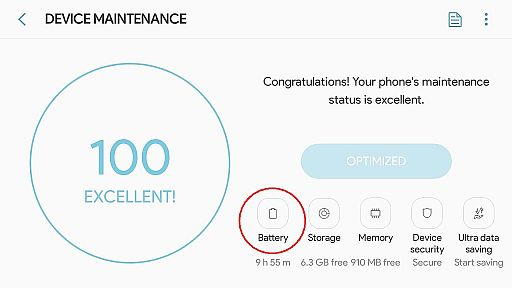
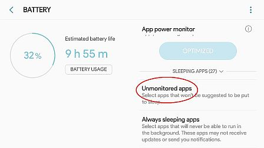
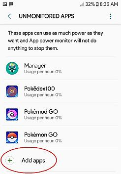

EXCLUDE APPS FROM BATTERY-SAVER
NOTE:
Settings may vary depending on device brand/ android version. This setting is taken from Samsung J5 (2017) running android 7.x
STEPS:
- Open Settings> Device Mentainance.

- On Device Maintenance tap Battery.

- On Battery tap Unmonitored Apps.

- On Unmonitored Apps tap "+ Add Apps".

- Add your fake gps app , pokemon go app and whatever app that you don't want to close while in background or overlay app.
FAQ: